Washington Breath Tests and Four-Year Recidivism RD Estimates
De-duplicated observations; local-linear BAC-threshold models with inclusive +/-0.05 bandwidths
Executive Summary
- Adult thresholds show lower four-year repeat breath-test rates just above both BAC cutoffs. At .08, the estimated discontinuity is -2.58 percentage points in 1999-2008, -2.08 points in 1999-2022, and -1.85 points in 2009-2022.
- At the adult .15 aggravated-DUI threshold, the estimated discontinuity is smaller but still negative across all three cohorts.
- For drivers younger than 21, the .02 discontinuity is negative in the earlier and longer cohorts but is imprecise in the 2009-2022 cohort. The .08 and .15 youth estimates are also imprecise.
Updated Adult Estimates
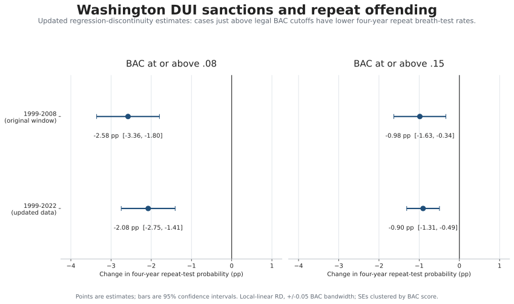
BAC Distribution and Sorting Check
The first exhibit plots the lower recorded BAC for ages 18 and older in crime codes 1 and 3 across the full observed BAC range. The upper panel includes exact-zero readings; the lower panel removes them so the score distribution near the legal thresholds is visible. The figure does not show an isolated point mass at .02, .08, or .15, but it should be read alongside the coding audit below.
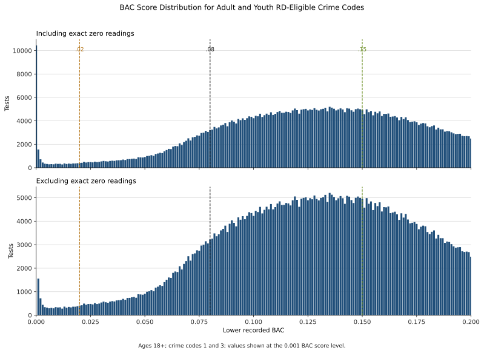
Breath-Test Patterns
These descriptive figures use de-duplicated Washington breath-test observations from 1995 through 2026.
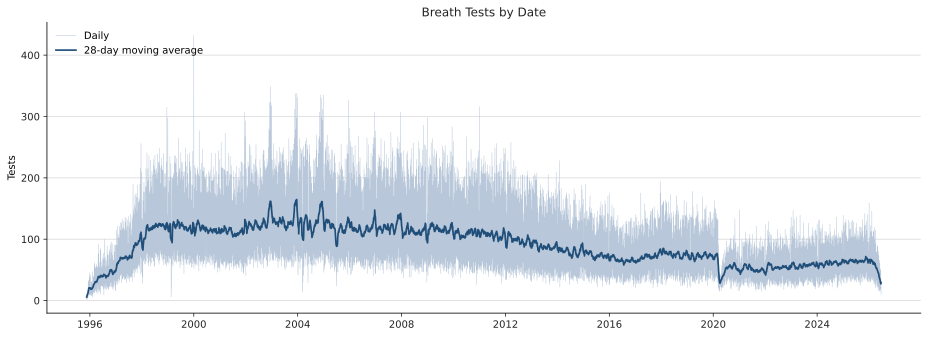
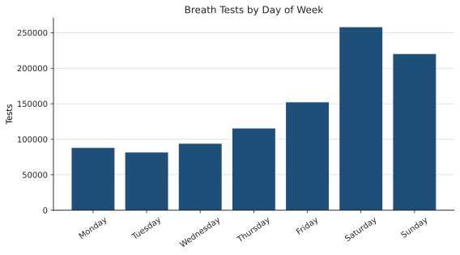
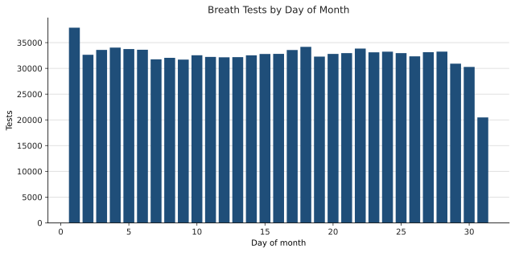
Youth Coding and Test-Platform Audit
The youth analytic sample includes crime codes 1 and 3. Draeger accounts for 56.1% of youth observations in 2017, 98.1% in 2018, and essentially all observations from 2019 forward. Code 3's share falls from 21.1% in 2017 to 18.9% in 2018 and 15.8% in 2019: this is not an all-at-once recode, but the code mix is not time-invariant. Exact-zero lower BAC readings rise sharply for code 1 at the platform transition (2.9% in 2017, 9.1% in 2018, and 14.2% in 2019), while code 3 does not show the same spike. Post-2018 youth specifications should therefore be checked with and without exact-zero readings and by crime code.
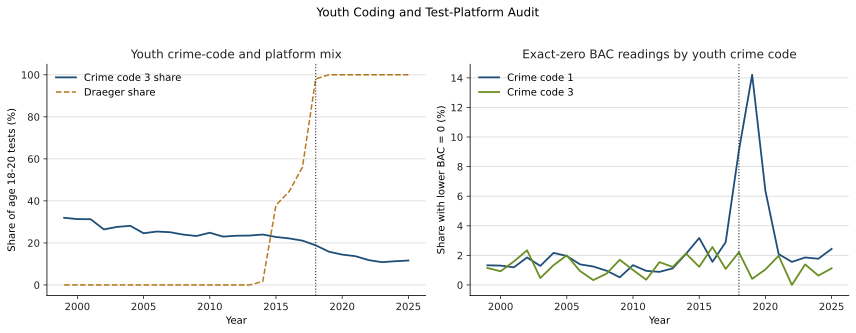
RD Design and Point Estimates
Each local-linear model estimates the discontinuity in the probability of a subsequent breath test within four years at the stated BAC cutoff. The running variable is the lower recorded BAC. The window includes observations within +/-0.05 BAC points; standard errors are cluster-robust by integer BAC score. The longer cohorts include only index tests with complete four-year follow-up, so 2022 ends on June 17.
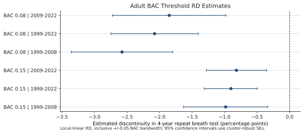
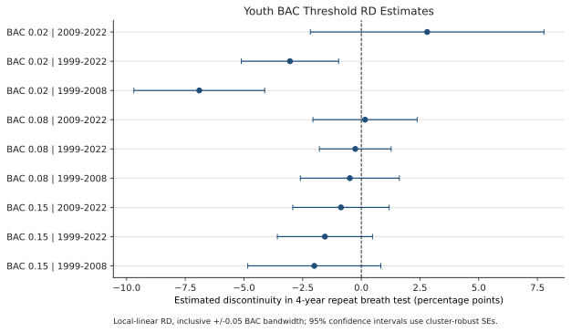
BAC and Four-Year Recidivism Scatterplots
Each point is a 0.001-BAC cell; circle size is proportional to the number of index tests in the cell. These displays retain broader BAC ranges for visual context, whereas the tabled RD models use the stated +/-0.05 bandwidth around each threshold.
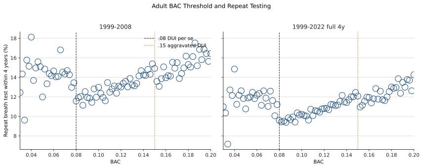
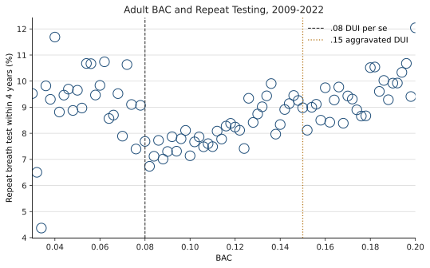
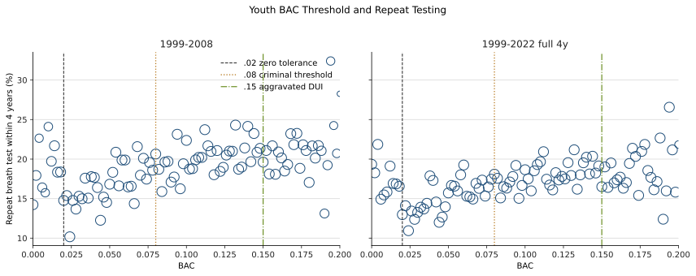
Adults: Four-Year Repeat Breath Test
Estimates are percentage-point discontinuities. Each cell gives point estimate, cluster-robust standard error, and analytic sample size.
| BAC threshold | 1999-2008 | 1999-2022 | 2009-2022 |
|---|---|---|---|
| 0.08 | -2.58 pp SE 0.40; N=110,318 | -2.08 pp SE 0.34; N=216,175 | -1.85 pp SE 0.44; N=105,857 |
| 0.15 | -0.98 pp SE 0.33; N=170,129 | -0.90 pp SE 0.21; N=326,372 | -0.82 pp SE 0.24; N=156,243 |
Youth Ages 18-20: Four-Year Repeat Breath Test
The .02 youth models have less left-side support because BAC is bounded below at zero; interpret their larger bandwidth results with particular care.
| BAC threshold | 1999-2008 | 1999-2022 | 2009-2022 |
|---|---|---|---|
| 0.02 | -6.90 pp SE 1.42; N=9,540 | -3.04 pp SE 1.06; N=15,467 | +2.80 pp SE 2.54; N=5,927 |
| 0.08 | -0.49 pp SE 1.08; N=18,136 | -0.26 pp SE 0.78; N=29,277 | +0.16 pp SE 1.13; N=11,141 |
| 0.15 | -2.00 pp SE 1.45; N=14,250 | -1.55 pp SE 1.03; N=23,999 | -0.87 pp SE 1.05; N=9,749 |
Interpretation
The estimates are local associations around administrative BAC thresholds, not estimates of the effect of alcohol consumption itself. A negative coefficient means that otherwise comparable observations just above the threshold have a lower estimated probability of another breath test within four years. The adult estimates are consistently negative; the youth models have substantially less precision, especially in the later cohort.